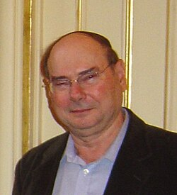

Amir Pnueli | |
|---|---|
אמיר פנואלי | |
 | |
| Born | April 22, 1941 |
| Died | 2 November 2009 (aged 68) |
| Education | Israel Institute of Technology (BS) Weizmann Institute of Science (MS, PhD) |
| Awards | Turing Award (1996) Israel Prize |
| Scientific career | |
| Fields | Computer Science |
| Institutions | Tel Aviv University Weizmann Institute New York University University of Pennsylvania Stanford University |
Doctoral students | |
Amir Pnueli (Hebrew: אמיר פנואלי; April 22, 1941 – November 2, 2009) was an Israeli computer scientist and the 1996 Turing Award recipient.
Amir Pnueli was born in Nahalal, in the British Mandate of Palestine (now in Israel). He attended Tichon Hadash high school in Tel Aviv.[1] He received a Bachelor's degree in mathematics from the Technion in Haifa, and Ph.D. in applied mathematics from the Weizmann Institute of Science (1967).[2] His thesis was on the topic of "Calculation of Tides in the Ocean". He switched to computer science during a stint as a post-doctoral fellow at Stanford University. His works in computer science focused on temporal logic and model checking, particularly regarding fairness properties of concurrent systems.[3]
He returned to Israel as a researcher; he was the founder and first chair of the computer science department at Tel Aviv University. He became a professor of computer science at the Weizmann Institute in 1981. From 1999 until his death, Pnueli also held a position at the Computer Science Department of New York University, New York, U.S.[3] He's also served as an associate professor at the University of Pennsylvania and the Joseph Fourier University.[4]
Pnueli also founded two startup technology companies during his career. He had three children and, at his death, had four grandchildren.[3]
Pnueli died on November 2, 2009, of a brain hemorrhage.[3][5][6]
{kind=link}